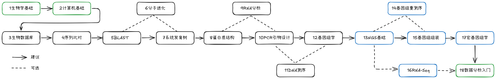

Bioinformatics and Genome Analysis
🐘李余动🐘2016-2026🐘🐘🐘
生物信息学综合利用生物学、计算机科学和统计学等多个学科的方法，以实现对海量生物医学数据的分析与解读，从而揭示生命的奥秘。随着基因组测序技术的快速发展，以及大数据和人工智能技术在生命科学中的广泛应用，生物信息技术在遗传病预防、病原体检测(pathogen detection)、肿瘤诊断(cancer diagnostics)及药物研发等方面都有重要的应用前景。目前生物信息技术已经逐渐走进人们的生活，如基于基因组大数据的精准医疗或健康管理服务等。生物信息技术作为未来生命医学研究与基因科技产业的核心技术，也受到越来越多的关注。
[!NOTE] Bioinformatics is an interdisciplinary field that develops methods and software tools for understanding biological data. As an interdisciplinary field of science, bioinformatics combines biology, computer science, information engineering, mathematics and statistics to analyze and interpret biological data. 生物信息学(bioinformatics) = 生物学(biology) + 计算机科学(computer science) + 统计学(statistics)

本书是编者在近几年给生物、食品专业学生讲授生物信息学课程的基础上整理编撰而成。全书以理论讲解与实践操作相结合的方式深入讲解生物信息学的基本理论和方法，在内容设计上既有详细的原理讲解部分，又有典型的实训案例分析，双管齐下，增加了学习趣味性，从而让学生学到更多的知识与技能。
全书共有18章，可分为三部分（下图中不同颜色标注）：
- 第1、第2与第18章分别为生物学、计算机与统计学的基础知识与技能，并在附录中介绍Linux系统、编程语言与概率论等基础知识；
- 第3-12章为生物信息学与基因组学的基本理论与方法，如DNA、RNA与蛋白质序列分析等；
- 第13-17章介绍下一代测序(NGS)数据分析方法及应用，如遗传变异检测(Variant detection),基因组组装(Genome assembly), 转录组测序(RNA-seq)与宏基因组学(Metagenomics)等；
教材每章内容适用于一次教学课时(1.5h)，教师可根据不同教学课时(如32/48)选讲部分章节内容，其它章节内容供学生自学。本教材的推荐教学安排如下图所示： 
另外，生物信息学是一门实践性很强的课程，适合采用“理实一体化”的教学方式，课堂上既有老师讲述理论内容，又有学生独立思考、上机操作实践内容，能激发学生的学习积极性与创造性。假如每学期为16个课时，可安排课堂讲授11-12个课时，再结合上机实践练习4-5个课时。
本站是教材[1]的配套电子书，提供纸质教材的内容扩展或更新，其中使用了其它网站或书籍的材料，仅供学生个人学习使用(侵删)。囿于本人水平有限，错漏之处在所难免，欢迎各位读者、同行指出错误或提出改进意见！您可以通过发送电子邮件(youdng#AT#hotmail.com)或加入QQ群(631381323)与我联系。
教材配套资源:
本教材所需要的软件、数据或文献等资源可从本站相关章节或以下网盘下载：
- 百度网盘链接：https://pan.baidu.com/s/1eMiHyb7mW4Nrbsfpw9JtdA (提取码: txh5)。
- 阿里云盘链接：https://www.aliyundrive.com/s/ZpsnsRCL2so
参考书：
- 李余动编著，生物信息学与基因组分析入门，2021，浙江大学出版社(购买链接).
- Jamil Momand & Alison McCurdy, Concepts in Bioinformatics and Genomics, 2016, Oxford University Press.
- Dan Krane & Michael Raymer(孙啸等译), Fundamental Concepts of Bioinformatics (生物信息学概论), 2004, 清华大学出版社.